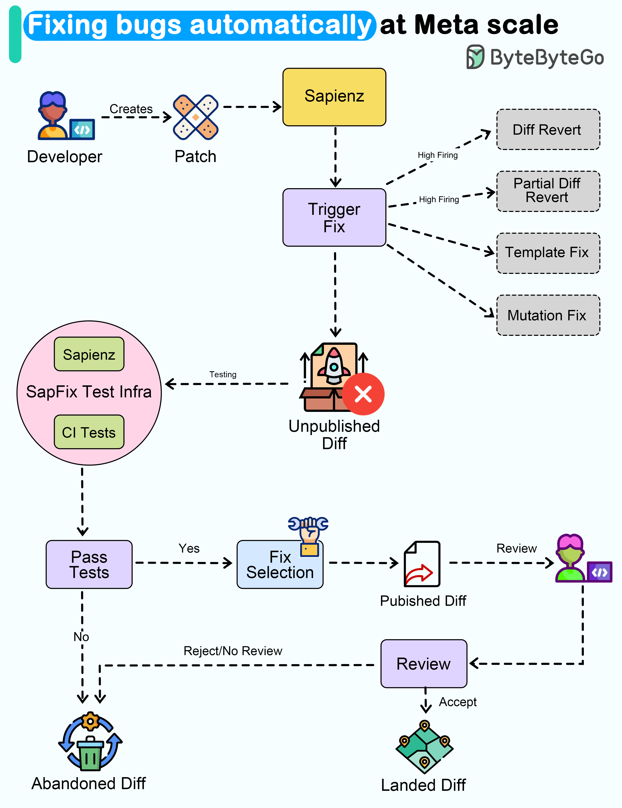

Wouldn’t it be nice if a system could automatically detect and fix
bugs for us?
Meta released a paper about how they automated end-to-end repair at
the Facebook scale. Let’s take a closer look.
The goal of a tool called SapFix is to simplify debugging by
automatically generating fixes for specific issues.
How successful has SapFix been?
Here are some details that have been made available:
-
Used on six key apps in the Facebook app family (Facebook,
Messenger, Instagram, FBLite, Workplace and Workchat). Each app
consists of tens of millions of lines of code
-
It generated 165 patches for 57 crashes in a 90-day pilot phase
-
The median time from fault detection to fix sent for human
approval was 69 minutes.
Here’s how SapFix actually works:
-
Developers submit changes for review using Phabricator (Facebook’s
CI system)
-
SapFix selects appropriate test cases from Sapienz (Facebook’s
automated test case design system) and executes them on the Diff
submitted for review
-
When SapFix detects a crash due to the Diff, it tries to generate
potential fixes. There are 4 types of fixes - template, mutation,
full revert and partial revert.
-
For generating a fix, SapFix runs tests on the patched builds and
checks what works. Think of it like solving a puzzle by trying out
different pieces.
-
Once the patches are tested, SapFix selects a candidate patch and
sends it to a human reviewer for review through Phabricator.
-
The primary reviewer is the developer who raised the change that
caused the crash. This developer often has the best technical
context. Other engineers are also subscribed to the proposed Diff.
-
The developer can accept the patch proposed by SapFix. However, the
developer can also reject the fix and discard it.